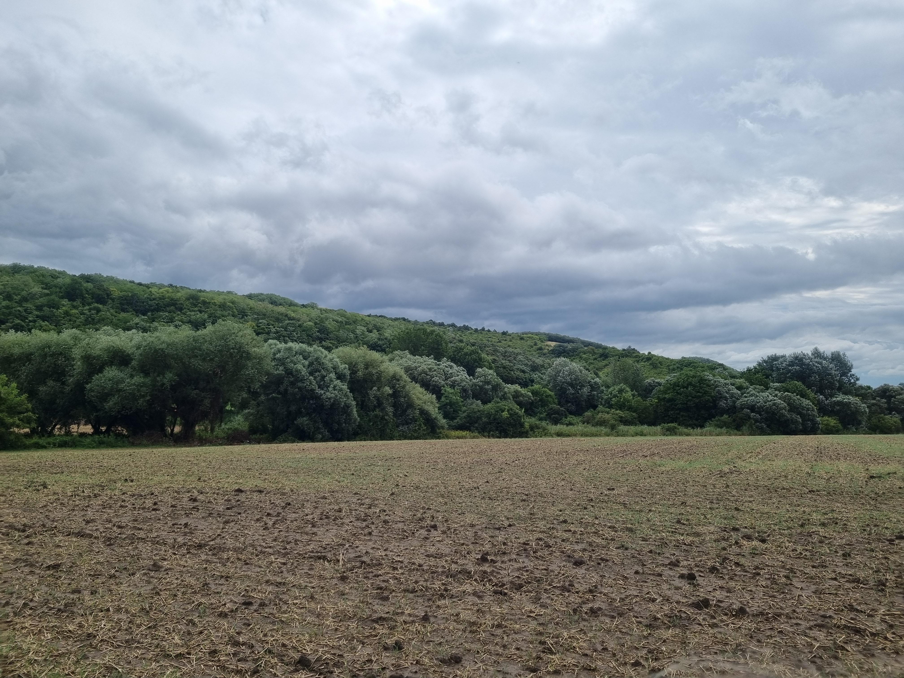
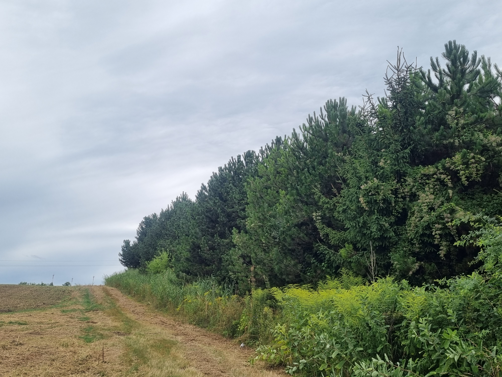
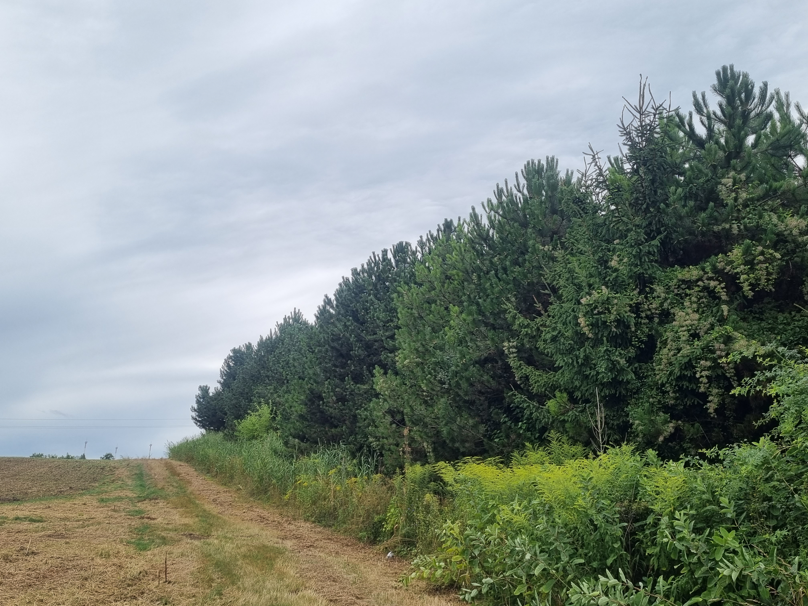
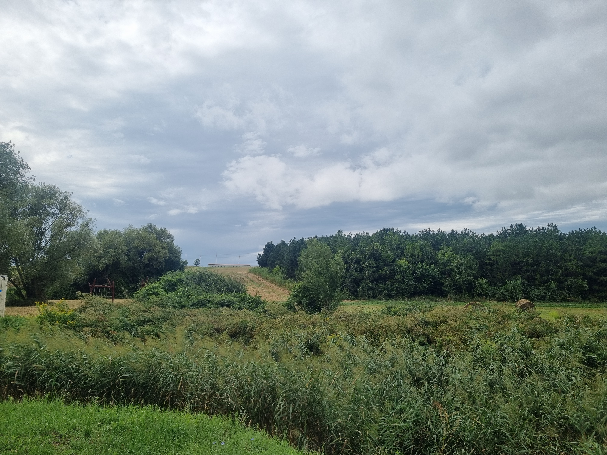
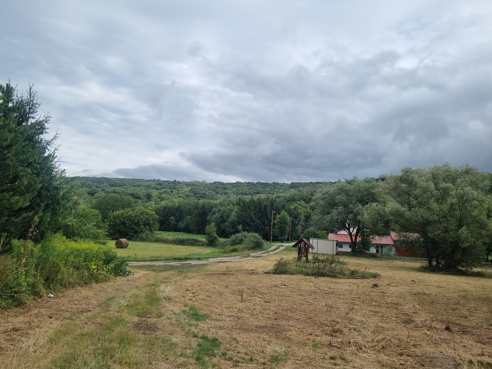
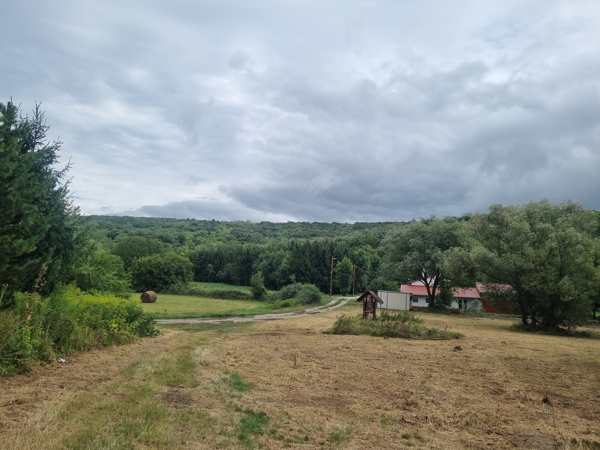

Nevét a környező szilfaerdőről kapta, valamint arról, hogy a terület eredetileg a váci püspök birtokához tartozott.

A villámárvizek ellen lefolyáslassítással védekeznek, az így visszatartott vízzel pedig vizesélőhelyeket hoztak létre.


Bár a kép nem annyira adja vissza, de gyönyörű fenyveseket is látni, ami mókusoknak is otthont ad.
 

A dombtetőn a Radioaktív Hulladék Feldolgozó és Tároló látható
Még néhány kép csak úgy a sétánkról...
 
